class: center, middle # Scientific Visualization Portfolio ## .red[Kutay B. Sezginel] #### PhD Candidate #### University of Pittsburgh, Chemical & Petroleum Engineering #### [Home](https://kbsezginel.github.io) <p style="font-size:14px;">Last updated: April 5, 2018</p> --- # Table of Contents #### 1. [Journal Covers](https://kbsezginel.github.io/visualization/portfolio#3) #### 2. [Videos](https://kbsezginel.github.io/visualization/portfolio#4) #### 3. [Animations](https://kbsezginel.github.io/visualization/portfolio#5) #### 4. [Images](https://kbsezginel.github.io/visualization/portfolio#8) #### 5. [3D Prints](https://kbsezginel.github.io/visualization/portfolio#14) --- <div style="padding: 0px 0px 0px 0px;"> <h2>.red[Journal Covers]</h2> </div> <div style="width: 50%; text-align: center; float:left; padding: 0px 0px 0px 0px;"> <a href="assets/img/portfolio/crystengcomm-cover.png" target="_blank"> 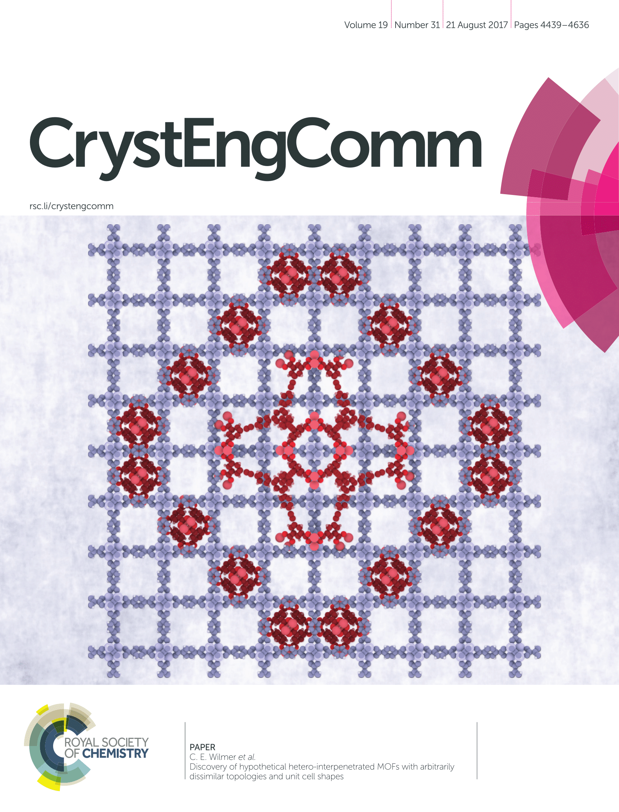 </a> <p style="font-size:11px; text-align:left;"> <a href="http://pubs.rsc.org/-/content/articlehtml/2017/ce/c7ce00290d" target="_blank"> Sezginel, K. B. et al. "Discovery of hypothetical hetero-interpenetrated MOFs with arbitrarily dissimilar topologies and unit cell shapes." CrystEngComm (2017). </a> </p> </div> <div style="width: 50%; text-align: center; float:left; padding: 0px 0px 0px 0px;"> <a href="assets/img/portfolio/chemmat-cover.png" target="_blank"> <img src="assets/img/portfolio/chemmat-cover.png" alt="chemmat-cover" height=450> </a> <p style="font-size:11px; text-align:left;"> <a href="https://pubs.acs.org/doi/abs/10.1021/acs.chemmater.7b05015" target="_blank"> Sezginel, Kutay B., et al. "Thermal transport in interpenetrated metal-organic frameworks." Chemistry of Materials (2018). </a> </p> </div> --- ## .red[Videos] <table style="width:100%"> <tr> <th>WilmerLab Video</th> <th>Maternal Assistance Programming</th> </tr> <tr> <th><iframe width="350" height="200" src="https://www.youtube.com/embed/et9iTlzYmDg?start=74" frameborder="0" allow="autoplay; encrypted-media" allowfullscreen></iframe> </th> <th><iframe width="350" height="200" src="https://www.youtube.com/embed/sEX6cHVi8wo" frameborder="0" allow="autoplay; encrypted-media" allowfullscreen></iframe></th> </tr> <tr> <td><p style="font-size:14px; text-align:left;"> This video was made as a final project for the Advanced Scientific Visualization class. It explains different research taking place in WilmerLab.<br> A part of my research (1:14 - 2:33) is animated using Blender.</p> </td> <td><p style="font-size:14px; text-align:left;"> Maternal Assistance Programming is a project I co-started to minimize problems during delivery.<br> The project is an algorithm that would predict bleeding risk before delivery to minimize complications.<br> The animations are done using Blender.</p> </td> </tr> </table> --- class: center, middle # <div class="font-effect-shadow-multiple"><p style="font-size:100px; color:#8e1313;">Animations</p><div> --- class: center <div style="padding: 10px 0px 0px 10px;"> <b>Entangled metal-organic frameworks animation </b> </div> <div style="padding: 5px 0px 0px 0px;"> <a href="assets/img/portfolio/ipmof-rotation.gif" target="_blank"> <img src="assets/img/portfolio/ipmof-rotation.gif" alt="ipmof-rotation" height="500"> </a> </div> <div style="padding: 0px 0px 0px 0px;"> <p style="font-size:14px; text-align:left;"> Two entangled molecular frameworks (depicted in blue and red) are shown in the animation. The frameworks are topologically compatible to entangle each other in 3 dimensions. I recently developed an <a href="http://pubs.rsc.org/-/content/articlehtml/2017/ce/c7ce00290d">algorithm</a> that can test whether two given frameworks are energectically favorable to entangle each other. This is one of the candidate structures identified by this algorithm. </p> </div> --- class: center <div style="padding: 10px 0px 0px 10px;"> <b>Rotaxane motion animation</b> </div> <a href="assets/img/portfolio/rotaxane-motion.gif" target="_blank"> 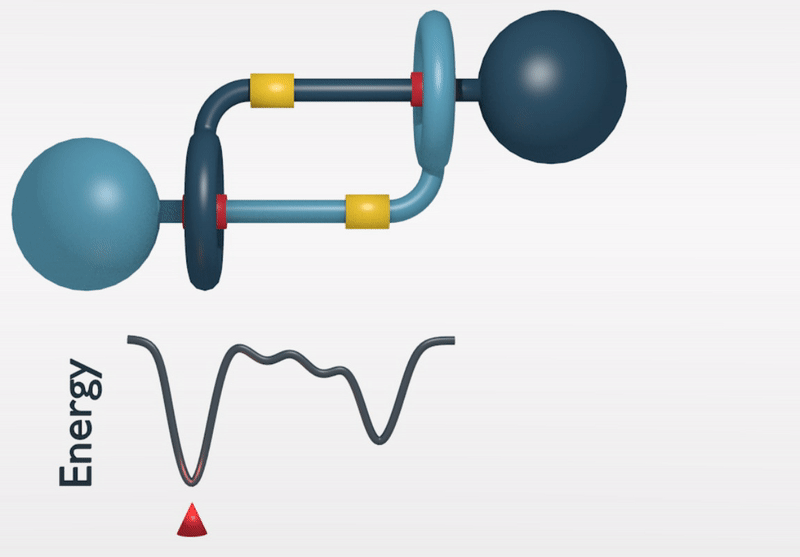 </a> <div style="padding: 0px 0px 0px 0px;"> <p style="font-size:14px; text-align:left;"> <a href="https://en.wikipedia.org/wiki/Rotaxane">Rotaxanes</a> are mechanically interlocked molecules. Here the motion of a bistable daisy chain rotaxane is shown. This rotaxane has two stable configurations: the extended (yellow) and contracted (red) states. The components of the molecule can be moved directionally to switch between these two states. One can make use of this property to create artificial muscle molecules that can contract and extend at will. </p> </div> --- class: center, middle # <div class="font-effect-shadow-multiple"><p style="font-size:100px; color:#8e1313;">Images</p><div> --- class: center ### WLAB NC-1 Nanocar <a href="assets/img/portfolio/nanocar-wlab-nc1.jpg" target="_blank"> 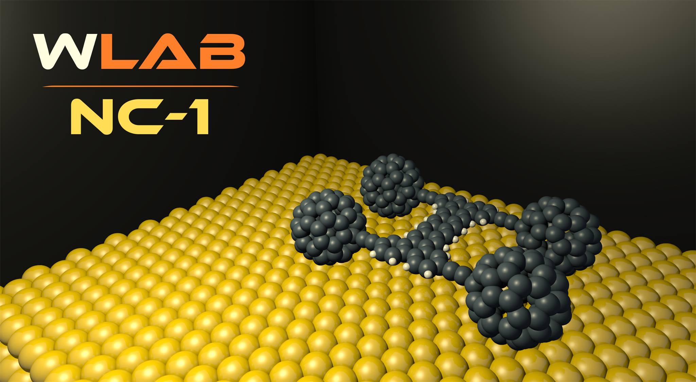 </a> <p style="font-size:14px; text-align:left;"> <a href="https://en.wikipedia.org/wiki/Nanocar">Nanocars</a> are car-like molecular structures. These molecules are used to understand how to control molecular diffusion on surfaces. In 2011 <a href="https://www.nature.com/articles/nature10587">Feringa and co-workers</a> even synthesized a nanocar with four molecular motors as wheels and achieved directional motion. In May 2017 <a href="https://www.nature.com/news/drivers-gear-up-for-world-s-first-nanocar-race-1.21845">world's first ever Nanocar race</a> took place in France. Six teams raced their molecular cars on a 100 nanometer gold track by "pushing" the molecules using a scanning tunnelling microscope tip. </p> --- class: center ### Rotaxane based artificial muscle prototype <a href="assets/img/portfolio/nanomuscle-prototype.png" target="_blank"> 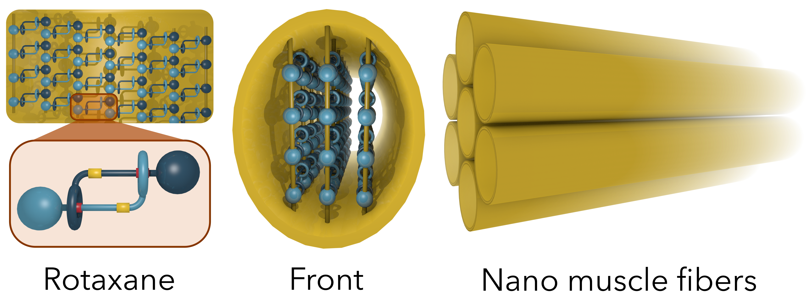 </a> <div style="padding: 0px 0px 0px 0px;"> <p style="font-size:14px; text-align:left;"> This is an artificial muscle prototype I made for Molecular Manufacturing (IE 2013) class at University of Pittsburgh. The idea is to make use of <a href="https://pubs.acs.org/doi/abs/10.1021/jacs.7b06710">bistable daisy chain rotaxanes</a> to build artificial muscle fibers that can seitch between extended and contracted states. First rotaxane molecules are polymerized both vertically and horizontally to increase the total force. Then these tube shaped polymers are bundled together further increase strength. Further work is necessary to design an actuation system for the fibers. </p> </div> --- class: center <a href="assets/img/portfolio/mof-assembly.png" target="_blank"> 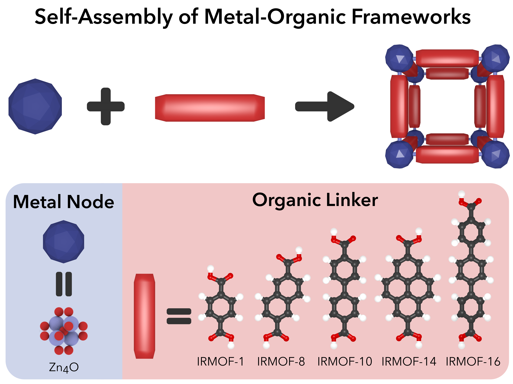 </a> <p style="font-size:14px; text-align:left;"> Metal-organic frameworks (MOFs) are porous crystalline structures constructured via self-assembly of molecular building blocks. Different frameworks with varying pore size, shape and topology can be achieved by varying building block chemistry. Here a simplified cubic MOF structure is shown. As seen below a Zinc metal node with varying organic linker molecules can be used to construct MOFs with different pore size.</p> --- class: center ### Hypothetical Interpenetrated Metal-Organic Frameworks <a href="assets/img/portfolio/candidate-interpenetrated-mofs.PNG" target="_blank"> 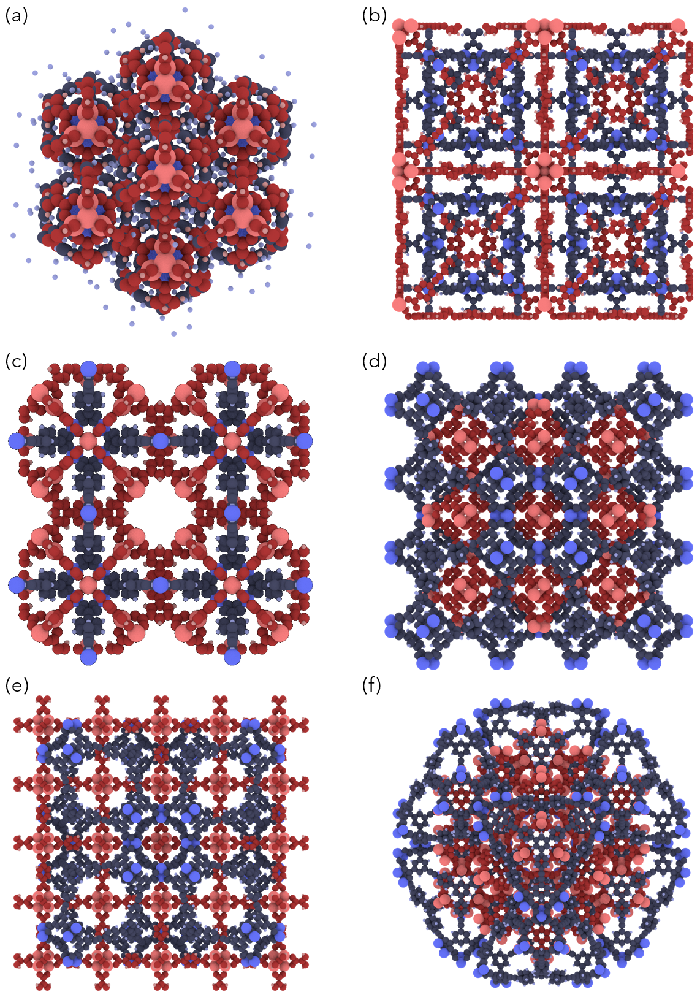 </a> <div style="padding: 0px 0px 0px 0px;"> <p style="font-size:14px; text-align:left;"> Here, entangled metal-organic framework (MOF) pairs (depicted in blue and red) are shown. These are hypothetical structures discovered as a result of <a href="http://pubs.rsc.org/-/content/articlehtml/2017/ce/c7ce00290d">my recent work</a>. In this work I searched for pairs of MOFs which can entangle each other without causing atomic collisions. Out of the ~18 million pairs I have tried I identified 19 hetero-interpenetrating MOF pairs. This illustrates the rarity of these entangled structures. </p> </div> --- class: center <a href="assets/img/portfolio/molecular-assembly.png" target="_blank"> 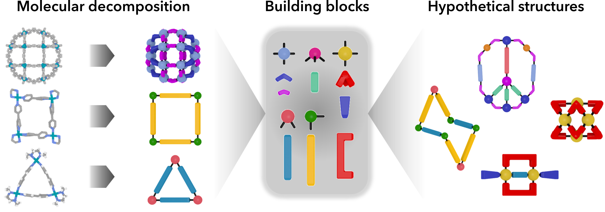 </a> <p style="font-size:14px; text-align:left;"> Self-assembly is a very important process for molecular construction. Geometric molecular structures are formed via self-assembly of molecular building blocks. By decomposing supramolecular structures we can create a library of building blocks. Using this library we can rationally design hypothetical molecular structures.</p> <a href="assets/img/portfolio/supramolecular-nanocages.png" target="_blank"> 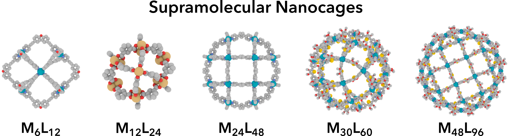 </a> <p style="font-size:14px; text-align:left;"> One family of supramolecular structures are molecular nanocages with varying diameter from 1 to 10 nm. Designing cages with desired sizes can be useful for various applications such as drug delivery. The cage can be designed to hold a drug molecule and deconstruct in desired chemical environment to release the drug. </p> --- class: center, middle # <div class="font-effect-3d"><p style="font-size:100px; color:#ad1d1d;">3D Prints</p><div> --- class: center <div style="text-align: center; padding: 5px 0px 10px 0px;"> <b>Molecular motor</b> </div> <div style="width: 50%; text-align: center; float:left; padding: 0px 0px 0px 0px;"> <a href="assets/img/portfolio/molecular-motor-pathway.gif" target="_blank"> 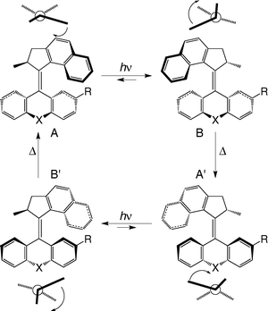 </a> <p style="font-size:11px; text-align:center;"> <a href="http://pubs.rsc.org/en/Content/ArticleHtml/2009/CP/b906611j" target="_blank">Source</a> </p> </div> <div style="width: 50%; text-align: center; float:left; padding: 0px 0px 0px 0px;"> <a href="assets/img/portfolio/molecular-motor-rotation.gif" target="_blank"> <img src="assets/img/portfolio/molecular-motor-rotation.gif" alt="molecular-motor-rotation" height=150> </a> <p style="font-size:11px; text-align:center;"> <a href="http://science.sciencemag.org/content/356/6341/964.full" target="_blank">Source</a> </p> </div> <div style="text-align: center; padding: 0px 0px 0px 0px;"> <p style="font-size:14px; text-align:left;"> Molecular motors are biological molecular machines that are the essential agents of movement in living organisms. Here is an artificial molecular designed by Ben Feringa. The motor has four switchable states to successively complete a full rotation. This particular motor can be rotated with light. </p> </div> <a href="assets/img/portfolio/molecular-motor-3d-print.png" target="_blank"> 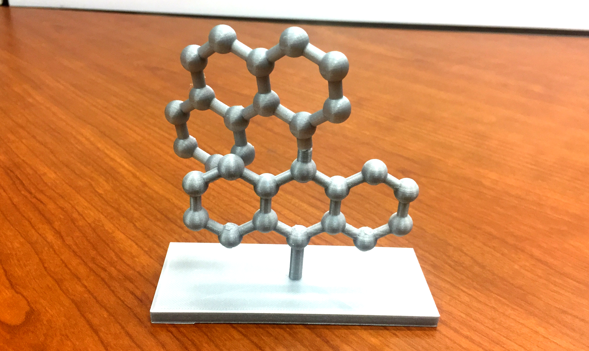 </a> --- class: center <div style="text-align: center; padding: 0px 0px 5px 0px;"> <b>Nanocar</b> </div> <a href="assets/img/portfolio/nanocar-3d-print.png" target="_blank"> 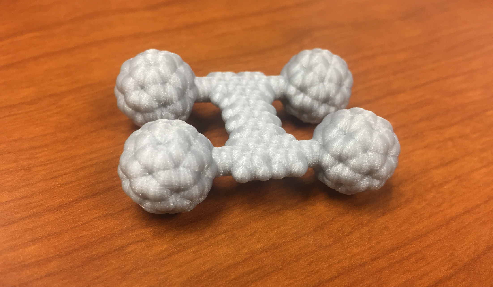 </a> <div style="text-align: center; padding: 10px 0px 5px 0px;"> <b>Rotaxane</b> </div> <a href="assets/img/portfolio/rotaxane-3d-print.png" target="_blank"> 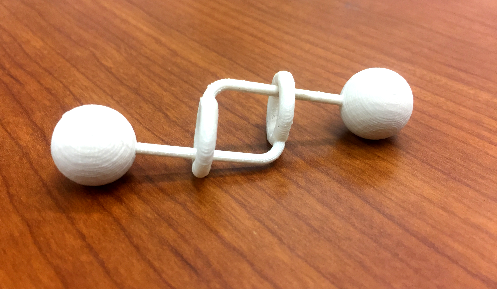 </a> --- class: center, middle # <div class="font-effect-anaglyph">Thank you!<div> ### [Home](https://kbsezginel.github.io)